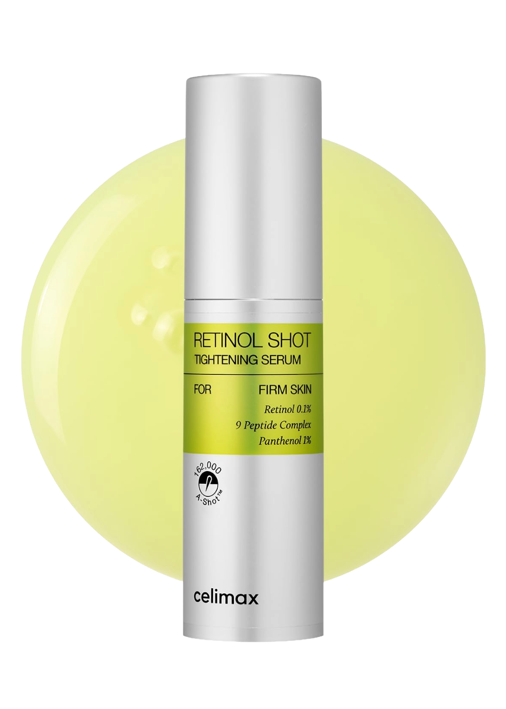
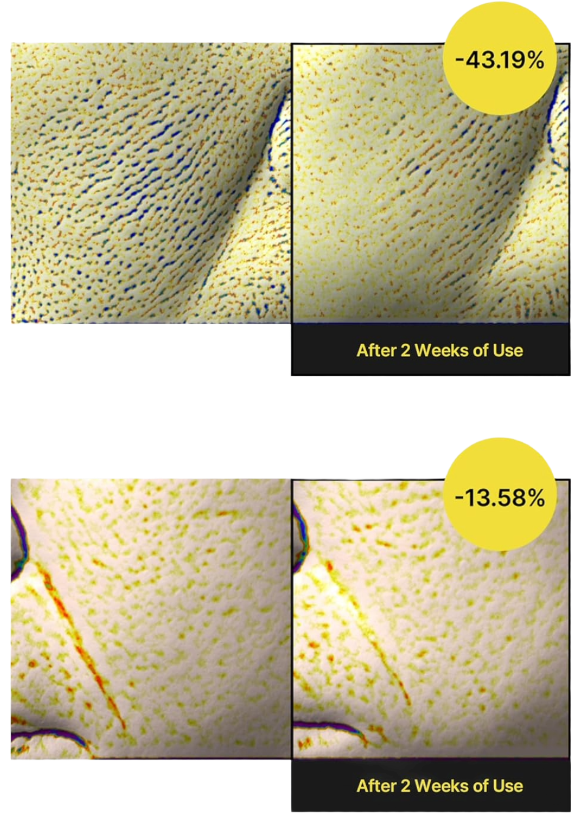

Celimax
Le Retinol Shot Tightening Booster de Celimax est un sérum anti-âge concentré à 0,1% de rétinol, l'actif de référence mondial pour la correction des rides, des pores élargis et de la texture inégale. Sa technologie exclusive A-Shot™ encapsule le rétinol pour en optimiser l'absorption cutanée tout en limitant l'irritation habituelle. Enrichi en 9 peptides bioactifs, en panthénol et en vitamine E, ce booster aide à stimuler la production de collagène, améliorer l'élasticité, réduire les taches et affiner durablement le grain de la peau. Texture légère et non collante. Format 30ml économique pour une cure complète de 3 mois.
Partout au Maroc
Importé directement de Corée
Le Retinol Shot Tightening Booster de Celimax est un sérum anti-âge concentré à 0,1% de rétinol, l'actif de référence mondial pour la correction des rides, des pores élargis et de la texture inégale. Sa technologie exclusive A-Shot™ encapsule le rétinol pour en optimiser l'absorption cutanée tout en limitant l'irritation habituelle. Enrichi en 9 peptides bioactifs, en panthénol et en vitamine E, ce booster aide à stimuler la production de collagène, améliorer l'élasticité, réduire les taches et affiner durablement le grain de la peau. Texture légère et non collante. Format 30ml économique pour une cure complète de 3 mois.
1. Utiliser le soir uniquement, après nettoyage et tonique. 2. Appliquer une noisette sur le visage entier (éviter le contour des yeux). 3. Tapoter doucement jusqu'à absorption complète puis appliquer la crème hydratante. 4. Débuter à 2–3x par semaine. Augmenter après 4 semaines selon tolérance. 5. SPF50+ obligatoire le matin. ⚠️ Ne pas mélanger avec AHA/BHA, vitamine C ou un autre rétinoïde le même soir.
Rétinol 0,1%, 9 Peptides (Acetyl Hexapeptide-3, Palmitoyl Tripeptide-5, Copper Tripeptide-1, etc.), Niacinamide 2%, Panthénol (B5), Vitamine E (Tocophérol), Hyaluronate de Sodium, Allantoine, Extrait de Centella Asiatica